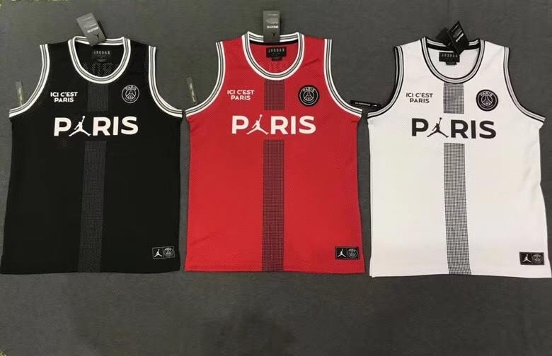
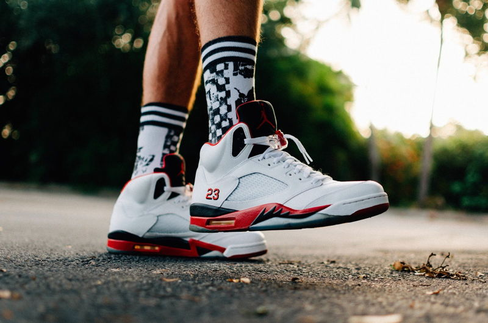
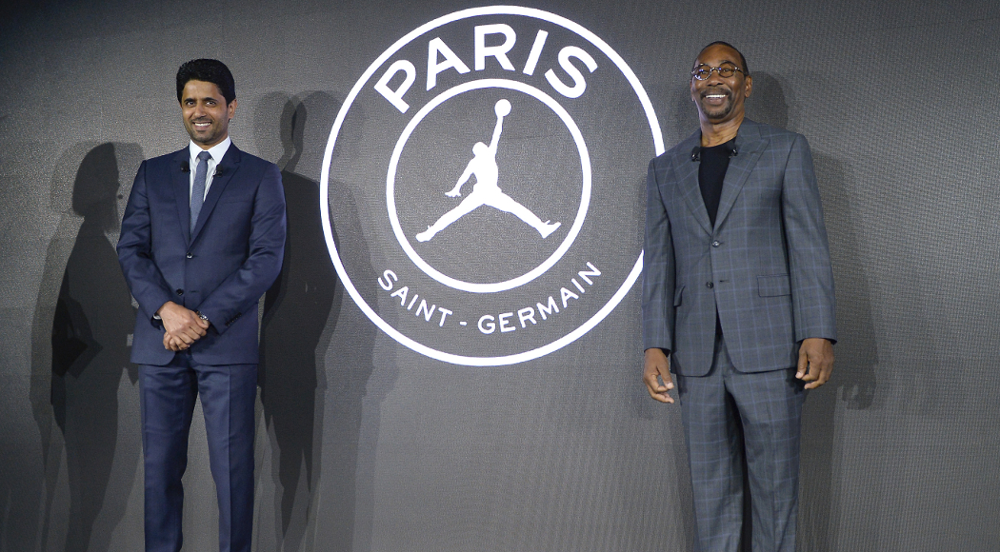

¿Qué es la marca Jordan?
En setiembre de 1984, la marca de ropa deportiva contrató a un joven basquetbolista que llegaba a los Chicago Bulls. En un par de años, lo convertiría en un ícono mundial con las "Air Jordan".
¿Qué significa la marca Jordan?
El logotipo que identifica a la marca de los zapatos publicados por 'Hir Airness' tiene su origen en una fotografía tomada a Michael Jordan durante una sesión de fotos para la revista Life en 1984, previa a los Juegos Olímpicos de Los Ángeles.
¿Cuál es la diferencia entre Jordan y Nike?
Empezando por el empeine, el de las Jordan tiene más paneles, un total de seis, y más costuras. El modelo de Nike tiene cuatro paneles y una puntera más grande. Algunos logos también cambian. La lengüeta de las Dunk respeta el diseño original de los años 80 con su logo Swoosh cosido en una etiqueta.
- 


¿Quién hace la marca Jordan?
Las inversiones deportivas de Michael Jordan: Firmó con Nike y el primer modelo del zapatillas de su 'Majestad' salió en octubre de 1984 y fue un éxito para la marca porque obtuvo más de 100 millones de dólares en ventas en su primer año. Junto con Nike decidieron tener una marca propia: Jordan Brand.

- 
- 